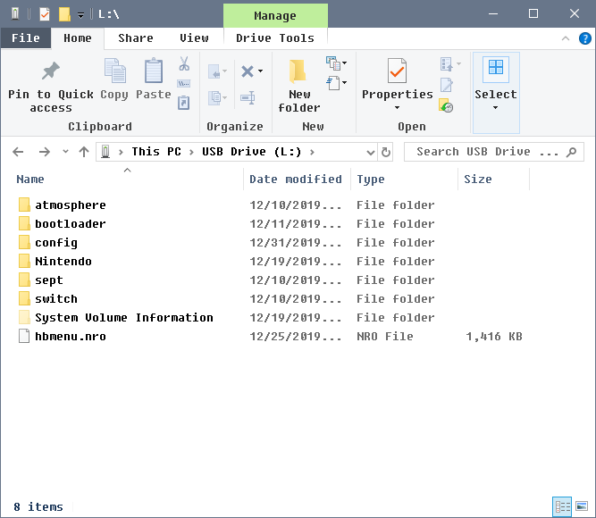

SD Preparation
We will now place the required files for the Atmosphere custom firmware and some additional homebrew files on the SD card.
Atmosphere has its own bootloader, called fusee. For the purposes of this guide we will be using Hekate instead, so that we can back up the system's NAND (internal storage) and take advantage of other advanced features in the future.
FAT32 vs exFAT
Your SD card will need to be formatted as either FAT32 or exFAT. FAT32 is recommended as it is more stable and will work out of the box with the Switch's operating system, but has a file size limit of 4GB. If you plan on using exFAT, you will need to install the exFAT update for your Switch, which is downloaded when you insert an exFAT formatted SD card in to your Switch. Note that this will update your console and requires an internet connection. I recommend FAT32 because I read about too many data loss from the CFW users. There are two ways to format your sd card as fat32, use guiformat
File name extensions
If you use Windows, you should enable file name extensions before continuing. See this link for a guide on how to do this.
What you need
- The latest release of Hekate (Download the
hekate_ctcaer_(version).ziprelease of hekate) - The hekate config file: hekate_ipl.ini
- The 90dns DNS redirection config: emummc.txt (Optional) (Best to use this, if you do not want to play online in CFW) (It will block normal online play)
- The latest release of Atmosphere (Download the
atmosphere-(version)-master-(version)+hbl-(version)+hbmenu-(version).ziprelease of Atmosphere.) - The latest release of fusee.bin payload for launching Atmosphere (Download the
fusee.binpayload of Atmosphere.) - The latest release of Lockpick_RCM (Download the
Lockpick_RCM.binrelease of Lockpick) - The latest release of JKSV (Download the
JKSV.nrorelease of JKSV) - The latest release of FTPD (Download the
ftpd.nrorelease of FTPD) - The latest release of NXThemeInstaller (Download the
NxThemesInstaller.nrorelease of NxThemeInstaller) - The latest release of NX-Shell (Download the
NX-Shell.nrorelease of nx-shell) - The latest release of the hbappstore (Download the
appstore.nrorelease of hbappstore)
Instructions
- Insert your Switch's SD card into your PC
- Copy the contents of the Atmosphere
.zipfile to the root of your SD card - Copy the
bootloaderfolder from the Hekate.zipfile to the root of your SD card - Copy
hekate_ipl.inito thebootloaderfolder on your SD card - Copy
Lockpick_RCM.binandfusee.binto the/bootloader/payloadsfolder on your SD card - Create a folder named
hostsinside theatmospherefolder on your SD card, and putemummc.txtin it. (Optional) (Best to use this, if you do not want to play online in CFW) (It will block normal online play) - Create a folder named
appstoreinside theswitchfolder on your SD card, and putappstore.nroin it - Copy
JKSV.nro,ftpd.nro,NX-Shell.nroandNxThemesInstaller.nroto theswitchfolder on your SD card - if you have Nintendo folder, copy to the root of your microSD card then you need to copy the contents of the Nintendo folder from the root of the sd card to the emummc/RAW1/Nintendo folder
- Reinsert your SD card back into your Switch

Restoring your existing Nintendo folder
If you were already using your microSD card as a storage device for your games and backed it up before partitioning your microSD card, it is now safe to restore it. Place it back on the root of your microSD card.
if you want same games on emuMMC, you need to copy the contents of the Nintendo folder from the root of the sd card to the emummc/RAW1/Nintendo folder.